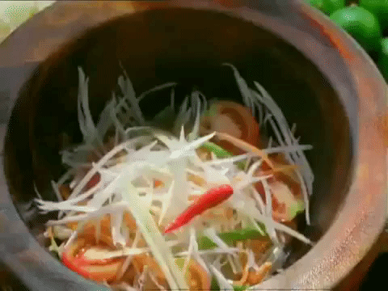

Som Tum!

Description:
Som Tum is a spicy and tangy Thai salad made with shredded green papaya, chilies, lime, fish sauce, peanuts, and tomatoes. It's typically served with sticky rice and often enjoyed as a refreshing, flavorful side dish.
Som Tum originated in northeastern Thailand (Isaan) and is believed to have been inspired by similar dishes in Laos. It became popular throughout Thailand due to its bold and vibrant flavors, representing the balance of sweet, sour, salty, and spicy elements in Thai cuisine.
Ingredients:
- Shredded Green Papaya
- Cherry Tomatoes
- Garlic
- Crushed Peanuts
- Lime
- Fish Sauce
- Sugar
- Fresh Chilli
Steps:
- Pound garlic and chilies together in a mortar and pestle (or mash with a spoon in a bowl).
- Add palm sugar, fish sauce, and lime juice; mix to dissolve.
- Add shredded papaya, tomatoes, and peanuts.
- Toss everything together until well combined and coated in dressing.
- Taste and adjust seasoning (add more lime, sugar, or fish sauce as needed).
- Serve immediately, often with sticky rice or grilled meat.
Home